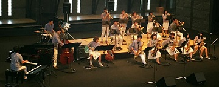
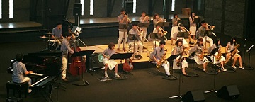

Welcome
芝浦工業大学 College Society Jazz Orchestra(CSJO) のHPへようこそ！
我々は主に、ジャズビックバンドの活動を行っております。
Contact
演奏依頼・質問・ウェブについては csjo.informationアットマークgmail.com までご連絡ください(アットマークを@に変えてください。)
News
ここにNewsが入ります
まだまだ新入部員募集中です！
CSJOでは新歓は終了しましたが、いつでも新入部員を絶賛募集しています！
CSJOはBigBand構成でJazzをメインに演奏しているバンドです。(詳しくはこちら)
吹奏楽やオーケストラと違い、少人数編成で自由度の高いところがBigBandの楽しいところです！
今まで楽器を経験したことのない方、BigBandは初めてという方、勿論今までにBigBandやJazzをやってきた方、どなたも大歓迎です！
募集パートは、Saxすべて/Trumpet/Trombone/Guitar/Drums/Bassです！(それ以外は要相談)
Twitterでも情報を発信していきますので是非フォローしてください！
College Society Jazz Orchestra(CSJO)とは？
CSJOとは、芝浦工業大学 文化会 軽音楽部の別称です。
私達のバンドは"ビッグバンドジャズ"という構成のバンドです。
ビッグバンドはサックス５人、トロンボーン４人、トランペット４人で成るホーンセクションと、
ピアノ、ギター、ベース、ドラムの１人ずつで成るリズムセクションの計17人という構成が基本のバンドです。
またCSJOでは、3年生を中心としたRegularバンドと1年生と2年生のJuniorバンドで活動しています。
 

Schedule
| 時期 | 名前 | 概要 |
|---|---|---|
| 未定 | 東芝国明 | 東洋大学、国学院大学、明治大学とのReg.のジョイントコンサートです。 |
| 未定 | jazz inn | 新Jr. 最初の演奏会であり、新入生のお披露目をします。 本学内で行いました。 |
| 未定 | とりがらめしけいじコンサート | 東大、立教、東工大、明治、芝浦、慶應(KMP,Light)、上智、早稲田のJr. のジョイントコンサートです。 |
| 未定 | 夏合宿 | 河口湖に行ってきます！ |
| 未定 | はまちコンサート | 多くの大学のJr. とのジョイントコンサートです。東京工業大学大岡山キャンパス大講堂で行われました。 |
| 未定 | おてライブ | Reg. のお寺でのライブです。 |
| 未定 | ひぐらしコンサート | 獨協大学、國學院大學、日本大学とのJr.・Reg. 合同のジョイントコンサートです。獨協大学で行われました。 |
| 未定 | 大学ビッグバンドフェスティバルin川越 | 多くの大学ビッグバンドが参加するコンサートです。Reg.が参加しました。 |
| 未定 | Jr.シーガル | Jr.のジョイントコンサートです。横浜市立大学で行われました。 |
| 未定 | 芝浦祭 | Reg.Jr.及び企画バンドの演奏をしました。 |
| 未定 | CSJOライブ | 現役のReg. ,Jr.とOBバンドの演奏会です。吉祥寺スターパインズカフェで行われました。 |
| 未定 | 定期演奏会 | CSJOの定期演奏会です。 |
| 未定 | 追いコン | 4年生の追い出しコンサートです。 |